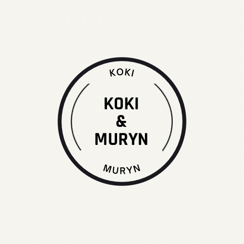

Koki&Muryn to sklep online, w którym nie tylko kupisz przedmioty taniej, ale dzięki dobrej jakości przedmiotów ładnie zaprezentujesz je na swoim stole, szafce bądź oknie. Sklep ten wyróżnia się niskimi cenami i dobrym kontaktem między kupującym a sprzedawcą. Strona Koki&Muryn.pl nie jest tylko sklepem online, lecz tutaj także znajdziesz informacje odnośnie współpracy z założycielem strony, który na zamówienie stworzy dla Ciebie na przykład stronę internetową z uwzględnieniem Twoich własnych preferencji.